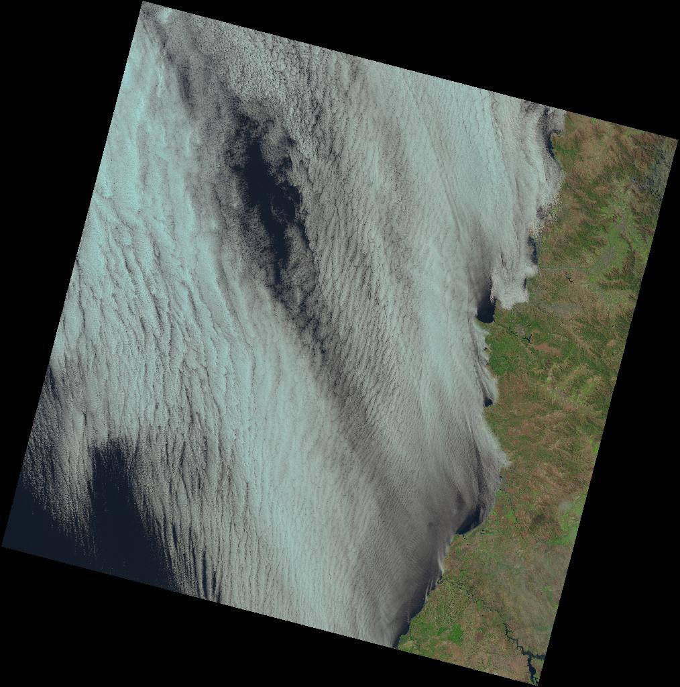

A Day of Landsat
A new way to browse Landsat 8 data
Days after days, new services designed to ease the access to Landsat 8 data pop up on the Internet. With the rise of cloud computing and new HTML standards this is just a beginning.
All those services share one common point, they always see localization as the key aspect of satellite data. It's a good viewpoint... but today I chose to do otherwise.
Nowadays people want the latest, the less cloudy, the greenest image, but think about the other images left. They should be considered as well, they deserve to be seen.
Landsat images are beautiful
This could summarize the main motivation of my new webmapping project. With the help of the nice landsat-api by development seed, I'm pleased to introduce : A Day Of Landsat 8

No need to localize or filter. Choose a date, scroll the image wall and admire what Landsat saw on that particular date. Find an intersting image, dowload a preview or full archive.You can even share it on Twitter!
Over 700 scenes are aquired every day... have fun!
More info and Usefull links:
- Date: April 2015
- Category: Landsat 8 / OpenData